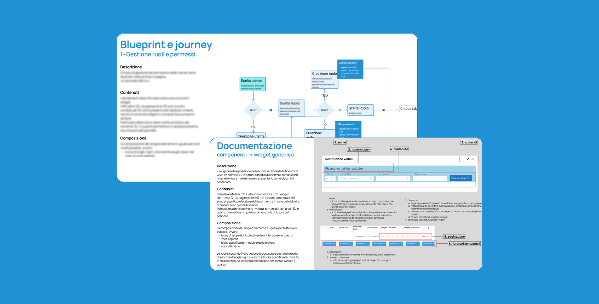
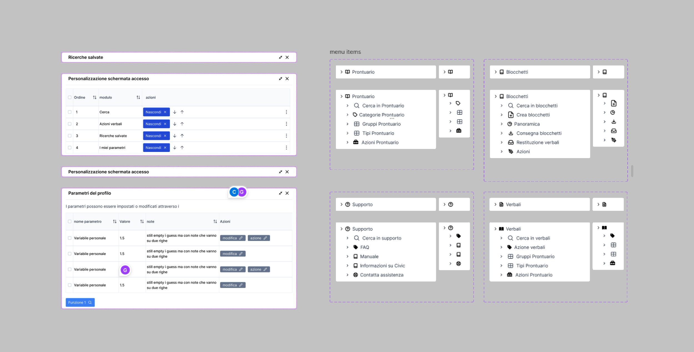

civic.
Redesigning a 25-year-old platform that runs the whole lifecycle of fines and ticket books.Il redesign di una piattaforma di 25 anni che gestisce l'intero ciclo di vita di multe e bollettari.

01contextcontesto
Civic manages everything a local police department does around fines: staff, payments, photo evidence, documents and integrations with outside services. It has been patched for 25 years to keep up with traffic law.Civic gestisce tutto ciò che un comando di polizia locale fa attorno alle multe: personale, pagamenti, rilievi fotografici, documenti e integrazioni con servizi esterni. Da 25 anni viene rattoppato per stare al passo col codice della strada.
I joined a consulting team with a front-end and a back-end developer, as product designer and strategist. I worked directly with the client's whole team, up to the company owner.Sono entrato in un team di consulenza con uno sviluppatore front-end e uno back-end, come product designer e strategist. Lavoravo a contatto diretto con tutto il team del cliente, fino al titolare.
02challengessfide
Huge scopePerimetro enorme
Staff, fines, payments, photo evidence, documents, APIs — 700+ search fields over 45 screens and 13 modules.Personale, multe, pagamenti, rilievi fotografici, documenti, API — oltre 700 campi di ricerca su 45 schermate e 13 moduli.
No shared patternsNessun pattern condiviso
Features were added for years without a guideline, so the same action behaved differently everywhere.Per anni si sono aggiunte funzioni senza linee guida, così la stessa azione si comportava in modo diverso ovunque.
No docs, no roadmapNiente documentazione, niente roadmap
Nothing for developers, nothing for users. Every stakeholder had their own idea of the product.Niente per gli sviluppatori, niente per gli utenti. Ogni stakeholder aveva la sua idea del prodotto.
Little UX, little timePoca UX, poco tempo
The team was new to UX and the first phase was 3 months — so information architecture came first.Il team era nuovo alla UX e la prima fase durava 3 mesi — quindi prima di tutto l'architettura dell'informazione.

03what I didcosa ho fatto
- Mapped stakeholder goals, roadmaps and worries; wrote the research plan.Ho mappato obiettivi, roadmap e timori degli stakeholder; ho scritto il piano di ricerca.
- Workshops with operators on their daily use of Civic.Workshop con gli operatori sul loro uso quotidiano di Civic.
- 40+ hours with expert users, turned into a service blueprint.Oltre 40 ore con utenti esperti, trasformate in un service blueprint.
- Studied the software on my own and mapped every element, pattern and convention.Ho studiato il software da solo e mappato ogni elemento, pattern e convenzione.
- Reusable page templates: migrating a feature = picking the right pattern.Template di pagina riutilizzabili: migrare una funzione = scegliere il pattern giusto.
- Translated industry conventions into modern, accessible web patterns.Ho tradotto le convenzioni del settore in pattern web moderni e accessibili.
- A design system built on PrimeNG, tuned to the client brand.Un design system su PrimeNG, adattato al brand del cliente.
- Helped define the roadmap, prioritise the backlog and set up a Scrum adapted to the team.Ho contribuito a definire la roadmap, dare priorità al backlog e impostare uno Scrum adattato al team.

04outcomerisultato
Pages now open clean with just the search module, then build themselves with widgets as the task moves on. Operators can save layouts per role as presets, so the right interface loads instantly.Ora le pagine si aprono pulite, con il solo modulo di ricerca, e si compongono di widget man mano che il lavoro avanza. Gli operatori salvano i layout per ruolo come preset, così l'interfaccia giusta si carica subito.
Where there's no design culture, how you say it matters as much as what you say.Dove manca una cultura del design, come lo dici conta quanto cosa dici.
An outdated screen can still hide excellent business logic. Start from what works.Una schermata datata può nascondere un'ottima logica di business. Parti da ciò che funziona.